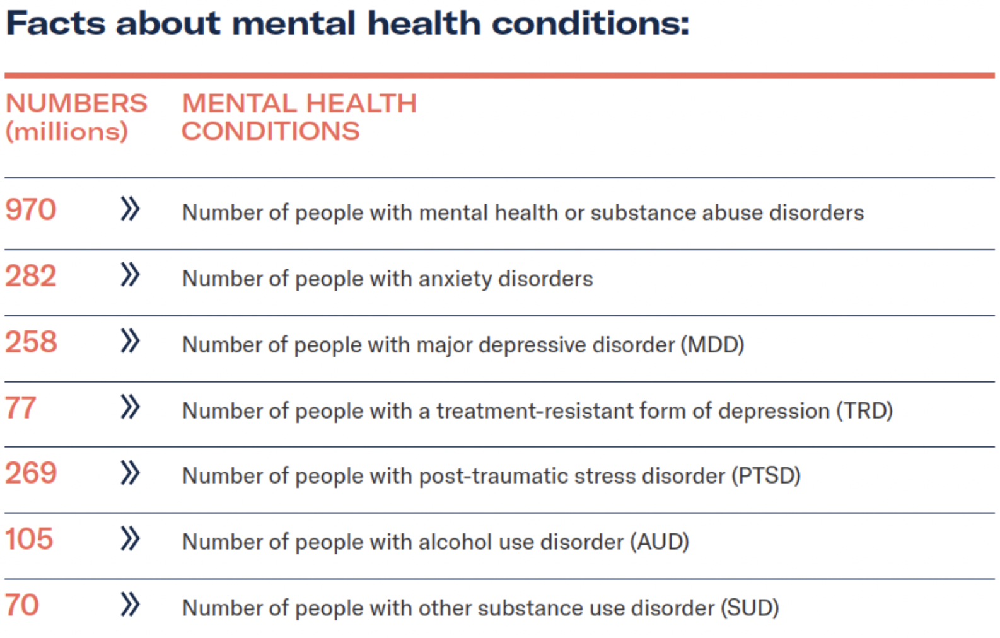

Breakthrough psychedelic and plant-based drugs for most common mental health issues
Now is an exciting time in mental health with use of psychedelic medicines, new and old, for the treatment of mental health conditions.
You only have to take one look at these staggering numbers to see the urgent and daunting task ahead.
Source: Blossom/Our World in Data/WHO
The work in progress emerged from decade’s old studies on the use of psychedelic substances to treat mental health disorders ranging from depression, anxiety, and addiction, to trauma, and OCD. With the criminalization of these substances in the 60’s and 70’s research ground to a halt.
The mental health landscape, meanwhile, was dominated by a few pharmaceuticals, with varying success. There has been VERY little innovation in this arena in the last 30 years. In fact, many of the large pharmaceutical companies killed off their neuropsychiatry divisions, to the detriment of mental health globally. Fortunately, they are starting to wake up again and pay attention. With the looming mental health crises, work began anew taking a more modern look at these compounds.
We are now in what is known as the Psychedelic Renaissance. What clinicians and researchers are finding (again) is that psychedelic substances are not just treatments, they have the potential to be curative. Let’s breathe that in. Individuals, some of whom have been facing a lifetime of suffering from anxiety, depression and trauma, can be cured. This is precisely why the psychedelic renaissance is so exciting. It gives hope to a hopeless field. It’s been almost a decade since a new antidepressant was approved in the US, and while they were well tolerated, most were no more effective than the ones we’ve had since the 1980’s. And those, clinically, aren’t even all that effective. Additionally, individuals may need to remain on those treatments for life. In a sign of hope, and of this new renaissance, ketamine was recently approved for treatment of depression in 2019. This is arguably a huge step forward in its therapeutic potential, but the drug itself has been around since 1970, primarily used as an anesthetic. So it’s exciting that it is approved, but it’s not “new.” I will quickly insert the caveat that these compounds are not a DIY cure. We are not talking (yet) about sending individuals home with a prescription! Clinicians and practitioners in this field will assert that the medicine with the right “set and setting” is currently the only way to assure the therapeutic efficacy of these compounds and ensure that the patient has safe and transformative experience. This in itself is exciting because it reconnects the therapeutic medicine to the therapeutic experience. Something that had been sadly separated, at least in the US, for a long time.
The psychedelic renaissance is not limited to previously identified compounds. It has caused a resurgence and renewed excitement around medicinal chemistry and neuropharmacology. Perhaps we can use some of these compounds, both ancient and synthetic to further unlock the brain’s workings and “unknot” the troublesome states of anxiety, addiction and depression.
With the current investments and R&D underway - it is easy to predict that by the end of the next decade we will have many new tools to address and potentially cure the most pressing mental health challenges facing us today.
For further reading see our blogs about the Psychedelic Renaissance part one and part two, Why We Invested in Gilgamesh, and our Psychedelics webinar.